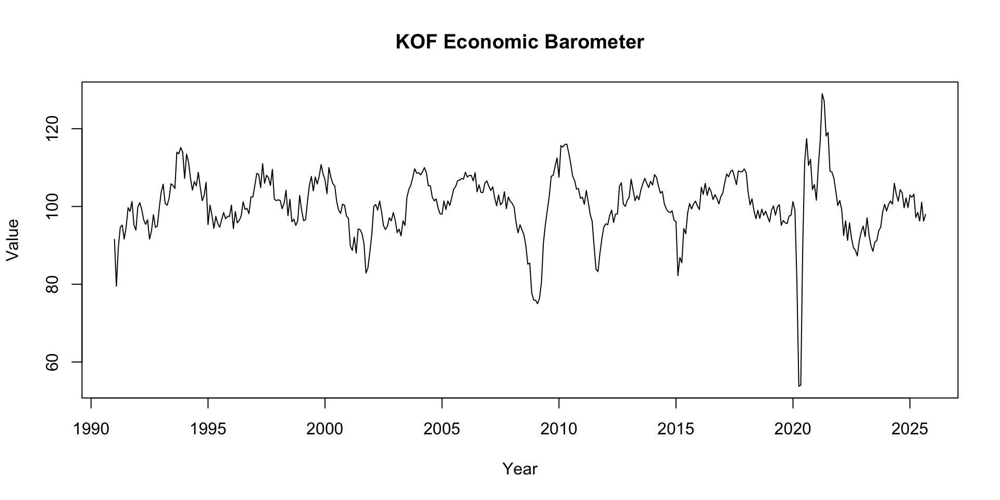
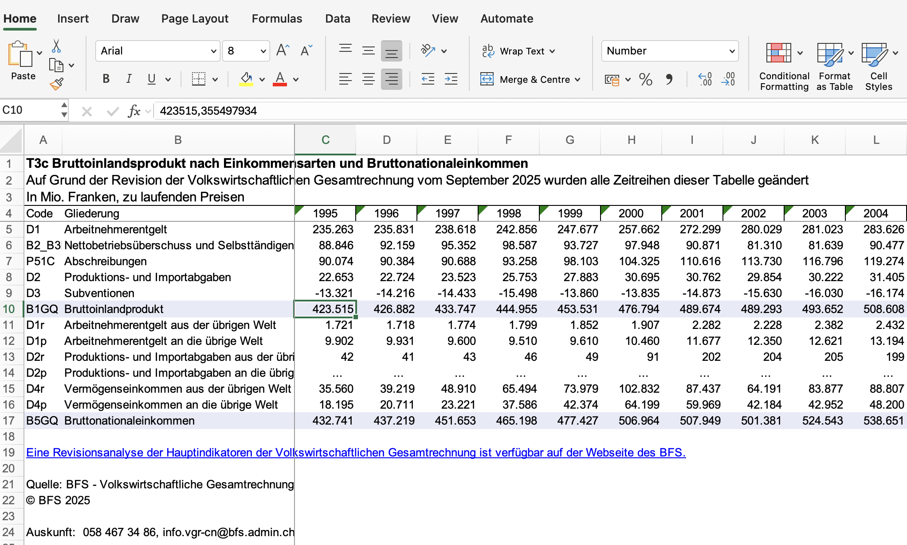
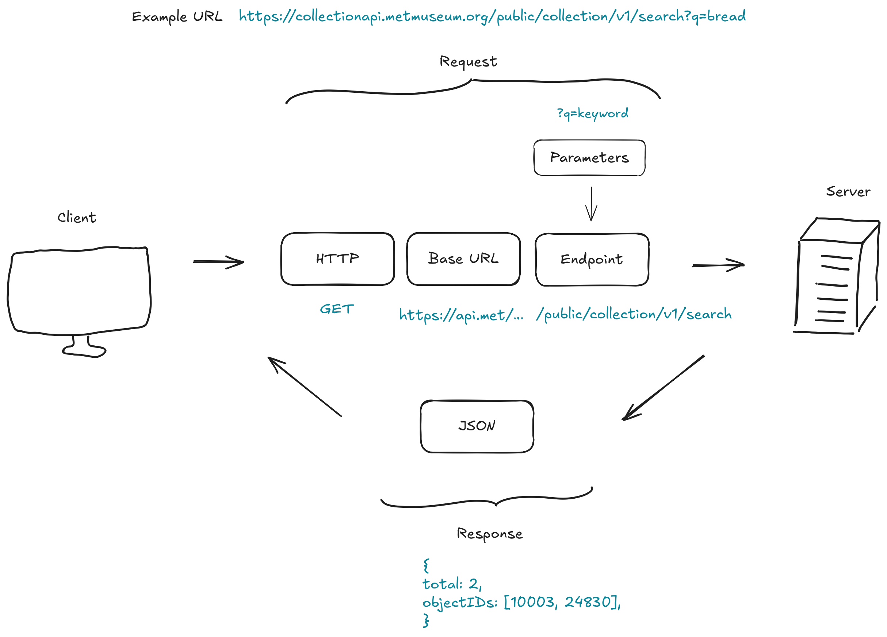
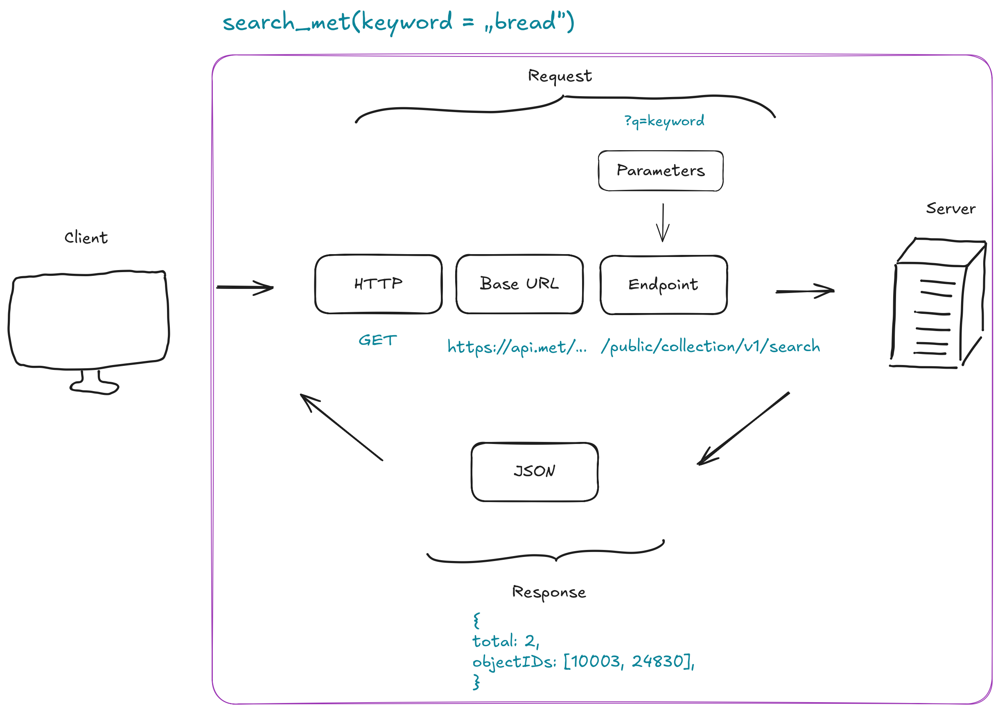
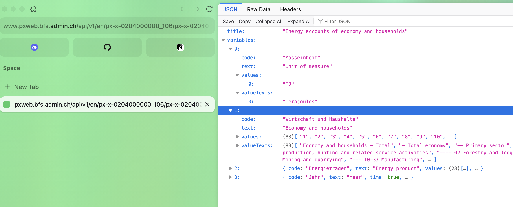

# A tibble: 10 × 2
Year GDP
<int> <dbl>
1 1995 423515.
2 1996 426882.
3 1997 433747.
4 1998 444955.
5 1999 453531.
6 2000 476794.
7 2001 489674.
8 2002 489293.
9 2003 493652.
10 2004 508608.Guest Lecture 2025
Leverage APIs for Economic Data
Minna Heim
How do we get the data for this Plot?
About me
- I took this course 4 years ago!
- Doing a Master in Data Science & minor in Economics at UZH
- Working at KOF-ETH
About the institute and my work


- From surveys to innovation to forecasting
- software, infrastructure and data publications with economic use cases.
- Teaching doctoral students to work with data & co.
What will you know by the end of this lecture?
- gain a better understanding of how APIs are used
- build your own mini wrapper
- learn to identify and understand the use of APIs in real-world contexts
Construct your own Economic Index
Naive Way

Import & Clean Data
library(readxl)
library(magrittr)
library(tidyr)
data <- read_xlsx("examples/je-d-04.02.01.03.xlsx")
# subset only the rows 3 (= year) and 9 (= gdp)
gdp <- data[9,]
names(gdp) <- data[3,]
# pivot data longer (from excel wide format to data frame long format)
gdp_long <- gdp %>%
pivot_longer(cols = everything(), names_to = "Year", values_to = "GDP")
# remove old headers
gdp_long <- gdp_long[-c(1:2),]
# check structure
# str(gdp_long)
# convert to gdp numeric and year to year
gdp_long$GDP <- as.numeric(gdp_long$GDP)
gdp_long$Year <- as.integer(gdp_long$Year)
head(gdp_long, n=10)API (wrapper) way
API Example

API wrappers
Use the BFS API Wrapper for R
# devtools::install_github("lgnbhl/BFS")
library(BFS)
# to inspect functions, use ?function, e.g.
?bfs_get_catalog_data
bfs_get_catalog_data(language = "en", title = "energy")
dataset_nr <- "px-x-0204000000_106"
energy_df <- bfs_get_data(dataset_nr, lang = "en")
# filter only total energy accounts
total_energy <- subset(
energy_df,
# filter for totals for each of the columns
`Economy and households` == "Economy and households - Total" &
`Energy product` == "Energy product - Total",
# select only the two relevant columns
select = c(Year, `Energy accounts of economy and households`)
)
names(total_energy)[2] <- "Amount"
# View(total_energy)
head(total_energy, n=10)# A tibble: 1 × 6
title language number_bfs number_asset publication_date url_px
<chr> <chr> <chr> <chr> <date> <chr>
1 Energy accounts of e… en px-x-0204… 36179320 2025-09-30 https…# A tibble: 6 × 5
`Unit of measure` `Economy and households` `Energy product` Year
<chr> <chr> <chr> <chr>
1 Terajoules Economy and households - Total Energy product - Total 2000
2 Terajoules Economy and households - Total Energy product - Total 2001
3 Terajoules Economy and households - Total Energy product - Total 2002
4 Terajoules Economy and households - Total Energy product - Total 2003
5 Terajoules Economy and households - Total Energy product - Total 2004
6 Terajoules Economy and households - Total Energy product - Total 2005
# ℹ 1 more variable: `Energy accounts of economy and households` <dbl># A tibble: 10 × 2
Year Amount
<chr> <dbl>
1 2000 1103603.
2 2001 1127768.
3 2002 1112879.
4 2003 1130842.
5 2004 1131767.
6 2005 1121999.
7 2006 1157170.
8 2007 1126804.
9 2008 1158734.
10 2009 1136915.BFS API - under the hood
Let’s take a closer look
bfs_get_data <- function(number_bfs, language = "de", query = NULL, column_name_type = "text", variable_value_type = "text", clean_names = FALSE, delay = NULL) {
# base url
df_json <- httr2::request("https://www.pxweb.bfs.admin.ch/api/v1") %>%
# add endpoints
httr2::req_url_path_append(paste0(language, "/", number_bfs, "/", number_bfs, ".px")) %>%
httr2::req_retry(max_tries = 2, max_seconds = 10) %>%
# executre request
httr2::req_perform() %>%
# transform response to json
httr2::resp_body_json(simplifyVector = TRUE)
Why APIs?
- automation
- easier to fetch specific data (specify time, specific indicators)
- real time data
- API usage (often) so much easier than scraping & downloading & reading & cleaning!! (all-in-1)
- used everywhere!
Exercises: Build your own API wrapper
httr2 cheatsheet
| Category | Function | Description |
|---|---|---|
| Request | request() |
Creates a new HTTP request object that defines the endpoint and method (e.g., GET, POST). |
| Request | req_perform() |
Sends the built request to the server and returns the response object. |
| Response | resp_body_json() |
Parses the response body as JSON and returns it as an R list. |
| Response | resp_status() |
Retrieves the HTTP status from the response object. |
COVID 19 API
- building our Economic Index
- for the time during and post covid
- for this, get vaccination and COVID 19 case rates (incl. death & recovery)
GET COVID Case Counts
library(httr2)
# library(magrittr)
get_case_counts <- function(country = "CH", period = "all"){
base_url <- "https://disease.sh/v3/covid-19/historical"
final_url <- paste0(base_url, "/", country, "?lastdays=", period)
# alternative - using magrittr pipe
# req <- request(base_url) %>%
# req_url_path_append(country) %>%
# req_url_query(period = period)
# perform API call with httr2
req <- request(final_url)
resp <- req_perform(req)
# if request is not successful
if (resp_status(resp) != 200){
message("The request was not successful")
}
else{
return(resp_body_json(resp))
}
}
get_case_counts("CH", 5)$country
[1] "Switzerland"
$province
$province[[1]]
[1] "mainland"
$timeline
$timeline$cases
$timeline$cases$`3/5/23`
[1] 4412439
$timeline$cases$`3/6/23`
[1] 4412439
$timeline$cases$`3/7/23`
[1] 4413911
$timeline$cases$`3/8/23`
[1] 4413911
$timeline$cases$`3/9/23`
[1] 4413911
$timeline$deaths
$timeline$deaths$`3/5/23`
[1] 14207
$timeline$deaths$`3/6/23`
[1] 14207
$timeline$deaths$`3/7/23`
[1] 14207
$timeline$deaths$`3/8/23`
[1] 14209
$timeline$deaths$`3/9/23`
[1] 14210
$timeline$recovered
$timeline$recovered$`3/5/23`
[1] 0
$timeline$recovered$`3/6/23`
[1] 0
$timeline$recovered$`3/7/23`
[1] 0
$timeline$recovered$`3/8/23`
[1] 0
$timeline$recovered$`3/9/23`
[1] 0Exercise Description
- use the API documentation: https://disease.sh/docs/
- use the template to write a function to get vaccination rates for a country
library(httr2)
get_country_vaccine_rates <- function(country = "CH", period = "all"){
base_url <- "..."
final_url <- "..."
# perform API call with httr2
req <- "..."(final_url)
resp <- "..."(req)
# if request is not successful
if (resp_status(resp) != 200){
message("The request was not successful")
}
else{
return(resp_body_json(resp))
}
}Sample Solution
GET Vaccine Rates
library(httr2)
get_country_vaccine_rates <- function(country = "CH", period = "all"){
# https://disease.sh/v3/covid-19/vaccine/coverage/countries/CH?lastdays=30&fullData=false
base_url <- "https://disease.sh/v3/covid-19/vaccine/coverage/countries"
final_url <- paste0(base_url, "/", country, "?lastdays=", period, "&fullData=false")
# perform API call with httr2
req <- request(final_url)
resp <- req_perform(req)
# if request is not successful
if (resp_status(resp) != 200){
message("The request was not successful")
}
else{
return(resp_body_json(resp))
}
}
get_country_vaccine_rates("CH", 5)$country
[1] "Switzerland"
$timeline
$timeline$`7/17/25`
[1] 16940716
$timeline$`7/18/25`
[1] 16940716
$timeline$`7/19/25`
[1] 16940716
$timeline$`7/20/25`
[1] 16940716
$timeline$`7/21/25`
[1] 16940716Other examples of APIs & API wrappers for economic data
- the kofdata R Package (for KOF data)
- the BFS R package (for Swiss federal statistics)
- the fredapi Python Library (for US economic data)
- the fredr data from the Federal Reserve Economic Data (FRED) API R package
- public-apis a Github repository listing Public APIs
Thank you for your attention!
If you are interested in working with us or if you have any questions:
- source code: https://github.com/minnaheim/dh_guest_lecture_2025
- slides: https://minnaheim.github.io/dh_guest_lecture_2025/presentation.html/
- find us at rseed.ch
- contact me: heim@kof.ethz.ch